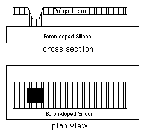
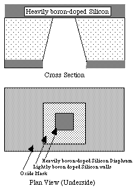

Laboratories
Laboratories
Two extended laboratories during the first half of the course reinforce lectures by emphasizing the basics of microfabrication
technology: film deposition (including physical and chemical deposition processes); diffusion (including film
growth, anneal, and solid or fluid source doping); etch (including wet and dry processes);
optical exposure; ion implantation; and materials and device characterization and evaluation.
Hands-on demonstration of these basic techniques involves, in the first lab,
surface micro-machined devices (such as cantilevers and resonators); in the second lab,
bulk micro-machined devices (such as pressure sensors) are constructed.
Both labs use prepared masks and the facilities of the Solid State Microengineering Laboratory.
-
Surface Micromachining
-

A
table
shows the fabrication sequence for the surface
micro-machining process used in the labs;
a detailed lab writeup is also available.
One structure fabricated is the micro-cantilever. An example cantilever is shown in
cross-section and plan view to the right.
At the end of the quarter, after the submission of design projects, students complete their hands-on laboratories by characterizing their devices.
This activity 'closes the loop' on these labs, and prepares them for the characterization work once their design
projects are returned from the foundry. Characterization includes SEM analysis.
Students are encouraged to submit their work in HTML format, so that results can be archived for Internet access.
-
Bulk Micromachining Lab
-

A similar process to that given in the
table
above is used in the bulk micro-machining lab.
A schematic of the final cross-section and plan view of a simple diaphragm is shown in
cross-section and plan view to the right.
A detailed lab writeup is also available.